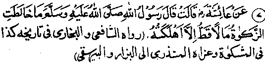

Chapter Five · Section (b): Ahadith threatening punishment for non-payment of Zakaat
5. Unpaid Zakaat destroys any property

Hadith 7
Rasulullah Sallallaho alaihe wasallam has said, ”Zakaat never mingles with any property without destroying it."
The Ulama have given two different interpretations of the Hadith, and both are correct, because the wording of the Hadith supports both interpretations.
One interpretation is that, if Zakaat is not paid out of a property on which it is due, it is mixed up with that property and causes its destruction. According to this reading, this Hadith conveys exactly the same meaning as indicated in the preceding Hadith. Hafiz Ibne Taimiyya Rahmatullah alaihe prefers this interpretation, as he has included this Hadith in his book, ‘Muntaqaa’, in a chapter captioned on paying ‘Zakaat without delay’. Humaidi Rahmatullah alaihe has also covered this Hadith, adding that, if Zakaat has become incumbent upon you and you have not paid it, then that which is forbidden (Haraam) will destroy that which is lawful (Halaal). That is to say, the amount of Zakaat, withholding which is forbidden, destroys the amount which may be kept back after Zakaat has been paid on it.
The other view, reportedly held by Imaam Ahmad Ibne Hanbal Rahmatullah alaihe, is that if a man who is rich, owning seven and a half tolas of gold (approximately 87.2 grams) or fifty two and half tolas of silver (approximately 610.3 grams) or anything of equal value, exceeding his basic needs, nevertheless receives Zakaat from others, pretending to be a poor man, the amount of Zakaat received by him will destroy the property already lying in his possession. (Mishkaat)
This Hadith contains a strict warning for those who pretend to be poor and receive Zakaat by deceiving others, though they possess enough property to make Zakaat incumbent upon themselves. The amount of Zakaat taken in this way, causes destruction of one’s own property and, thus, one has to suffer a great loss in return fo. a paltry gain. Then it is no use cursing the thieves or those who have taken it by force. A man’s wrong action causes destruction of his own property and the sin of taking Zakaat undeservedly shall remain registered against him.